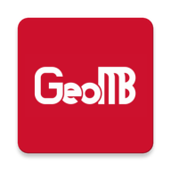

☰
⚠ Afectaciones

GeoMB — Mapa CDMX/Edomex
Metrobús, Mexibús y Mexicable en un mismo mapa
Sistema en el mapa
Metrobús
Mexibús
Mexicable
Buscar unidad (número económico)
Línea
limpiar
Destino
Todos
Ruta / variante
Todas
Empresa / concesionario
Todas
Cargando…
Cargando datos…